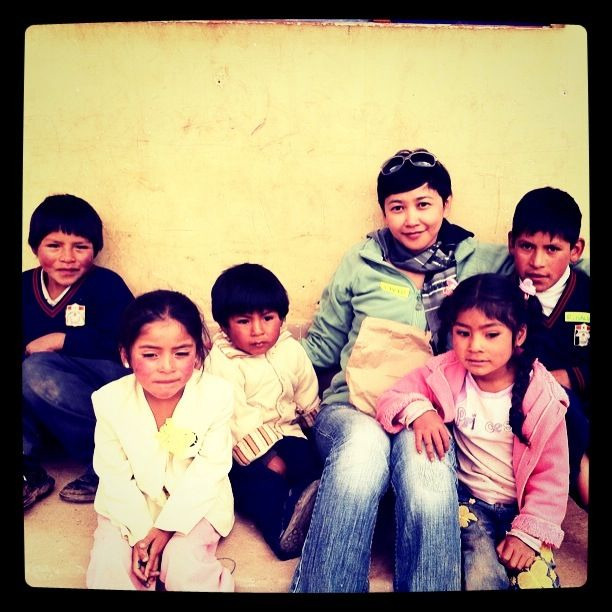

Sun, 07 Nov 2010 17:11:42 · peru · cusco · volunteer · travel · city · photography
my students in peru i did a short volunteer

My students in Peru.
I did a short volunteer work while in Peru, teaching English to a 3rd graders. The school is located in Santa Ana, a small town on the hill about 20 minutes ride by ‘Collectivo’ (a public mini van) from Cusco.
The students were absolutely adorable and they were so eager to learn.
• Photo was taken with iPhone 4.